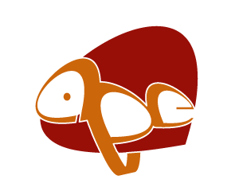
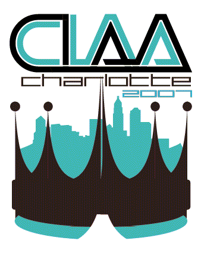

Republic Activation
Without stores Republic needed a way for users to be able to activate their own phones once they arrived in the mail.
GOALS
GOALS
- To create a seamless workflow between Android Moto and Google and Republic
- Accommodate multi variant user scenarios
- To allow activation without authorizing

Welcome Screen
Beta taught us that users did not remember if they had an account or what email they used. With a single input we could help them remember.
That way regardless of whether or not they were a customer they would just enter in an email. We then reference all know emails associated with accounts, if we see a match then we pin this phone to that account. If not we look to see if the user expected there to be a match.
This reduced the amount of manuel account merges

Number Selection
Originally we framed this question as what did you intend to do with this new phone? Add another line to your account or upgrade an existing phone line to a new phone. Users were always choosing the wrong option which had no good solutions, support had to manually undo the mistake
So we tried a different way of asking the same question. Once we reframed the question around which phone number do you want on this new phone it matched our users mental model.
Until we reframed the question this was in the top 3 support driver, it no longer shows up on the top ten ticket drivers for Republic

Number Selection
Originally we framed this question as what did you intend to do with this new phone? Add another line to your account or upgrade an existing phone line to a new phone. Users were always choosing the wrong option which had no good solutions, support had to manually undo the mistake
So we tried a different way of asking the same question. Once we reframed the question around which phone number do you want on this new phone it matched our users mental model.
Until we reframed the question this was in the top 3 support driver, it no longer shows up on the top ten ticket drivers for Republic

Plan Selection
We thought initially that users would be interested in seeing the unlimited wifi calling and texting, instead it just confused them. They expect it to be unlimited.
The one thing that they did care about what how much cell data came with the plan, they also cared what type of cell data they were getting. It was important to be clear that the cell data was high speed. Our contract with Sprint did not allow us to reference their network in anyway
The hardest part of designing this app was figuring out the app's information architecture. The Relay app must work as all 3 things:
- Manage devices & channels
- A location tracker
- A communication tool
We wanted the experience of communication part to act and look like the relay stand alone device

Relay Channel Store
The store had to promote channels, allow the user to add and manage channels as well as learn how to use those channels
- We separated everything to do with the devices into the side navigation drawer, including location tracking
- We created a bottom app bar to be where you interact with channels
- Lastly we created a simple interface for communicating, mirroring the industrial design and interaction pattern on the physical device
Republic Anywhere
The concept of the messaging app was to allow a user to untether their phone number from their smartphone
Users were used to their phone number to be integrated natively with their phone. We wanted to keep that feeling for the desktop app. The main reason was the importance of smart contextual notifications that could be seen and interacted with quickly.
Users were used to their phone number to be integrated natively with their phone. We wanted to keep that feeling for the desktop app. The main reason was the importance of smart contextual notifications that could be seen and interacted with quickly.

Tablet App
To make the most of the space a tablet affords and to transform gracefully between portrait and landscape the left hand message history was reduced to avatar only for space.

Mobile App
THE LEARNINGS
Due to the way android structures data base access for sms required the only way to write to it was to create your own mobile messaging app and ask the os for permission.
Users we not bothered my inconsistencies between platforms, close enough worked well.

Desktop Calling
LEARNINGS
The first round of designs for the desktop incoming call screen tried to integrate the calling interface into the desktop app. But the complexity that it created when switching conversation with an ongoing call made the concept on workable.
Launched as a separate component of the Anywhere desktop
The first round of designs for the desktop incoming call screen tried to integrate the calling interface into the desktop app. But the complexity that it created when switching conversation with an ongoing call made the concept on workable.
Launched as a separate component of the Anywhere desktop


